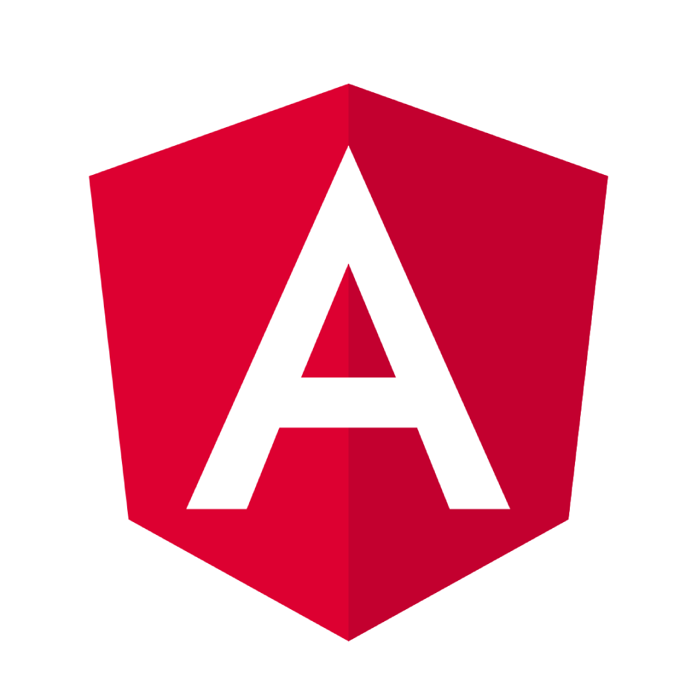

Veille informatique
Contenu :
Créer et mettre en œuvre une interface utilisateur interactive pour une application web dédiée à la programmation front-end. Présentation des concepts, mise en valeur des pratiques et fourniture d’informations pertinentes pour offrir une expérience d’apprentissage en ligne engageante et attirer les utilisateurs vers le monde du développement front-end.
FRONT END CODING
Définition:
En développement web, la notion de « front end » fait référence à l’ensemble des éléments visibles et
accessibles directement sur un site web (voire sur une application web ou une application web mobile).
Hypertext Markup Language |
Interface utilisateur |
Cascading Style Sheets |
JavaScript |
|---|---|---|---|
| Ce langage permet d’écrire de l’hypertexte (d’où son nom), de structurer sémantiquement une page web, de mettre en forme du contenu, de créer des formulaires de saisie ou encore d’inclure des ressources multimédias dont des images, des vidéos, et des programmes informatiques. L'HTML offre également la possibilité de créer des documents interopérables avec des équipements très variés et conformément aux exigences de l’accessibilité du web.*2 | L’interface utilisateur est un dispositif matériel ou logiciel qui permet à un usager d'interagir avec un produit informatique. C'est une interface informatique qui coordonne les interactions homme-machine, en permettant à l'usager humain de contrôler le produit et d'échanger des informations avec le produit. | Le langage de programmation CSS (Cascading Style Sheet) permet d'intégrer des règles de présentation à un document HTML ou XML. Cette feuille de style en cascade a été développée dans les années 1990. L'idée de cascade rappelle qu'un site web codé avec du CSS est stylisé avec des règles classées selon différents degrés d'importance.*3 | JavaScript est un langage de programmation de scripts principalement employé dans les pages web interactives et à ce titre est une partie essentielle des applications web. Avec les langages HTML et CSS, JavaScript est au cœur des langages utilisés par les développeurs web3. Une grande majorité des sites web l'utilisent4, et la majorité des navigateurs web disposent d'un moteur JavaScript5 pour l'interpréter.*4 |
DÉFI
Le principal défi du développement web frontal est de toujours s'adapter aux dernières évolutions ; les outils et les techniques de développement étant en évolution constante. La conception des sites internet doit également être capable d’offrir une bonne ergonomie de lecture en facilitant la navigation et l’obtention d’information. Cet objectif est d’autant plus compliqué que les appareils ont des formats et tailles variés. Le développeur doit donc s’assurer que le site internet apparait correctement sur l’ensemble des navigateurs Web et des appareils disponibles.
Principaux sujet de veille
Progressive Web App |
React Native |
Angular |
Vue.js |
|---|---|---|---|
|  | |||
| Application web qui consiste en des pages ou des sites web, et qui peuvent apparaître à l'utilisateur de la même manière que les applications natives ou les applications mobiles. Ce type d'applications tente de combiner les fonctionnalités offertes par la plupart des navigateurs modernes avec les avantages de l'expérience offerte par les appareils mobiles2,3. | Framework d'applications mobiles open source créé par Facebook2. Il est utilisé pour développer des applications pour Android3, iOS et UWP4 en permettant aux développeurs d’utiliser React avec les fonctionnalités natives de ces plateformes. | Framework pour clients, open source, basé sur TypeScript Angular est une réécriture complète d'AngularJS. Il permet la création d’applications Web et plus particulièrement d'applications Web monopages : des applications Web accessibles via une page Web unique qui permet de fluidifier l’expérience utilisateur et d’éviter les chargements de pages à chaque nouvelle action. | Framework JavaScript open-source utilisé pour construire des interfaces utilisateur et des applications web monopages. Vue a été créé par Evan You et est maintenu par lui et le reste des membres actifs de l'équipe principale travaillant sur le projet et son écosystème. |
Mes inspirations
Vous trouverez ci-dessous mes inspirations en front-end coding ou dans le codage en général.
Benjamin Code
Cliquer pour voir plus

Basti UI
Cliquer pour voir plus

Outil de veille
Pour rester à jour dans ce domaine en constante évolution, voici quelques suggestions et ressources qui m'ont été utile lors de ma veille :
Sites Web et Blogs |
Podcast |
Newsletter |
Forums et Communautés |
|---|---|---|---|
| Les sites web et blogs m'ont permis de comprendre et connaître de nouvelles manières de fonctionner et du système avancé | Le podcast m'a permis d'approfondir ma connaissance de manière accessible et dont je suis le plus susceptible de comprendre | Explorez les fonctionnalités avancées et les systèmes innovants à travers nos sélections de contenus en ligne. | Échangez vos expériences et découvrez de nouvelles approches sur les sites web et les blogs de notre communauté. |
Fils d'actualité suivi
Front-End Front
Cliquer pour voir plus
Medium
Cliquer pour voir plus
Coryrylan
Cliquer pour voir plus

Friday Front-End
Cliquer pour voir plus
Liens de développement front-end tweetés quotidiennement et envoyés par courrier électronique chaque semaine.
Friday Front-End